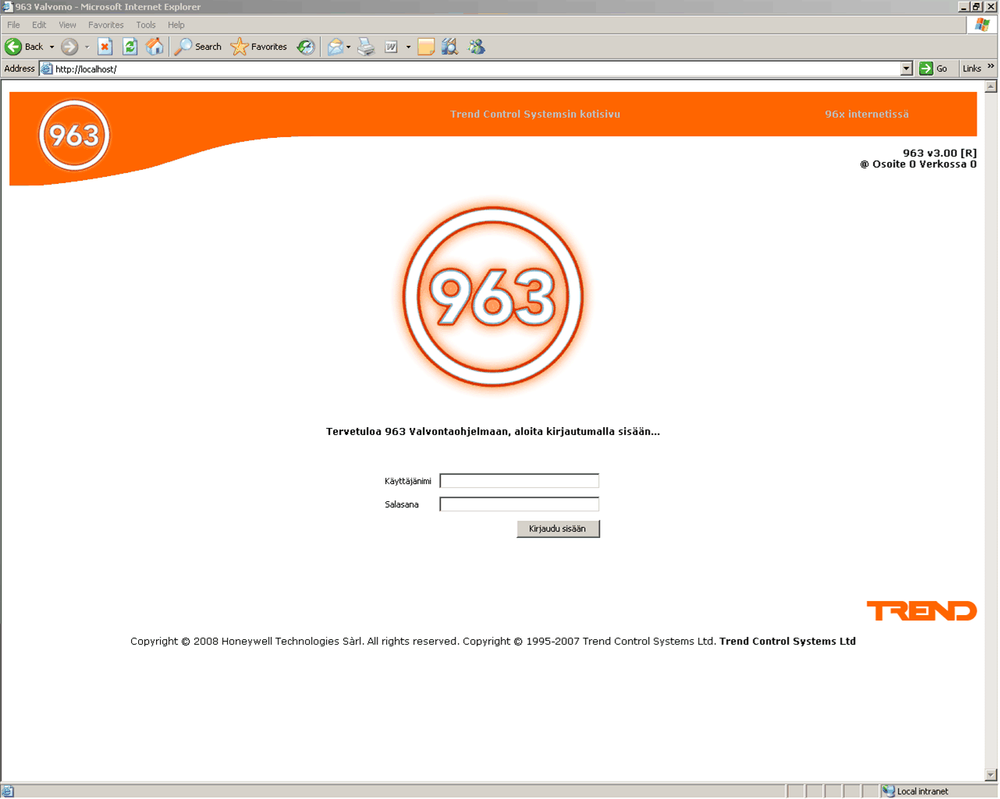

963 Serveriin saadaan yhteys kaikkialta, mistä 963 Serveriin voidaan luoda TCP/IP-yhteys.
963 Serveriä voidaan käyttää kahdella tavalla, graafisessa tai tekstitilassa, riippuen työasemana käyttävästä selaimesta tai laitteesta. 963-työasemien PC-kokoonpanolle ei ole erityisvaatimuksia, kunhan niissä on asennettuna TCP/IP-verkkoprotokolla sekä Ethernet-kortti ja web-selain. Täysiä grafiikkaominaisuuksia (graafinen tila) varten tarvitaan Internet Explorer v6.0 tai uudempi tai Firefox 2 (suositus Internet Explorer versio 6 tai uudempi) sekä SUN JAVA runtime environment v1.5 tai uudempi. Muut selaimet toimivat vain tekstinäytöllä (tekstitilassa). PDA-laitteet, joiden käyttöjärjestelmänä on Windows Mobile 2003 Second Edition tai uudempi, Nokia 9210i ja älypuhelimet, joiden käyttöjärjestelmänä on Windows Mobile 5 tai uudempi, saavat palvelimeen yhteyden tekstitilassa.
Huomaa, että 963:a ei ole testattu kaikilla laitteilla eikä Trend voi taata tietyn laitteen yhteensopivuutta 963 Serverin kanssa.
Edellä mainittujen tilojen välillä on eroja
Yhteyden muodostaminen 963 Serveriin:
Käynnistä web-selain.
Syötä 963-palvelimen URL-osoite. Jos 963 on esiasetettu käyttämään muuta TCP/IP-porttia kuin portti 80, syötä porttinumero kaksoispisteellä erotettuna, esim. http:// 963:6000.
Tämä on sen tietokoneen IP-osoite tai nimi, johon 963 Server on asennettuna. Alla näkyvä 963 Server oletussivu näkyviin.

Vihje: Ohjelmoija on saattanut luoda pikapainikkeen, joka suorittaa vaiheet (1) ja (2). Napsauta sitä.
Huomioi, että näytölle saattaa tulla erilainen sivu, jos ohjelmoija on suunnitellut niin.
Kun syötät voimassa olevan käyttäjätunnuksen ja salasanan, näyttöön tulisi ilmestyä informaatiosivu. Jos yhteydessä 963:een on ongelmia, näytölle tulee virheilmoitus.
Huomaa, että turvallisuussyistä 963 Secure Server sallii pääsyn vain graafisessa tilassa.